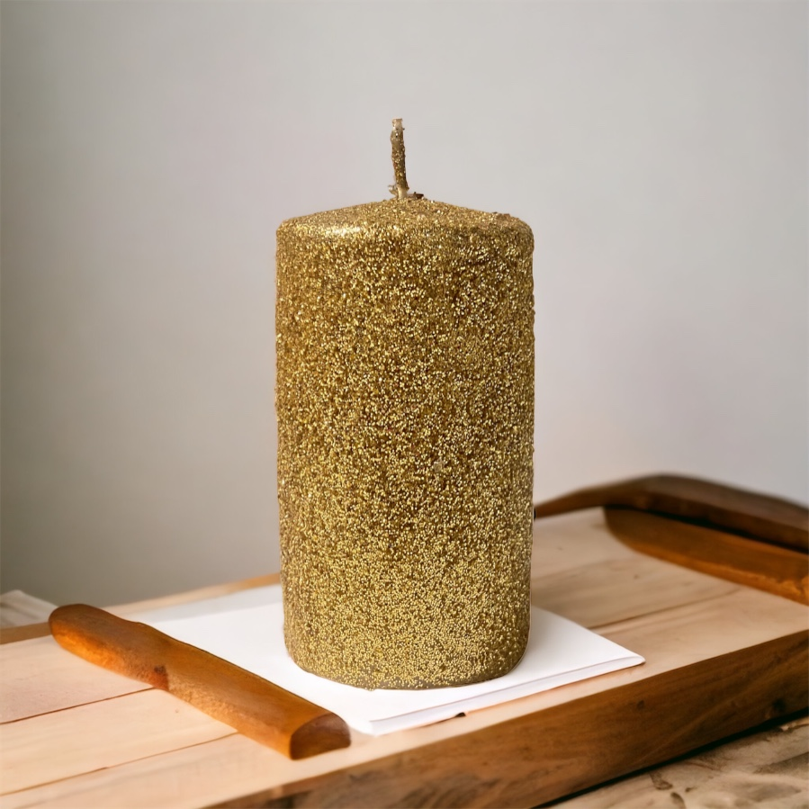

Ev dekorasyonu, evimizi kişiselleştirmek, rahatlatıcı bir atmosfer yaratmak ve iç mekanı estetik olarak güzelleştirmek için kullandığımız önemli bir unsurdur. Bir evin atmosferini şekillendirmede kullanılan öğelerden biri de mumlardır. Mumlar, ev dekorasyonunda stil ve atmosfer yaratmada çok yönlü ve etkileyici bir rol oynarlar. Yumuşak ışıkları, sıcak atmosferi ve farklı tasarım seçenekleriyle, mumlar evin her odasında kullanılabilir. Bu yazıda, ev dekorasyonunda mumların stil ve atmosfer yaratmada nasıl kullanılabileceğini keşfedeceğiz.
Mumların Stil ve Atmosfer Yaratmadaki Rolü:
Yumuşak Aydınlatma: Mumlar, evdeki aydınlatmayı tamamlamak ve yumuşak bir ışık kaynağı sağlamak için mükemmel bir seçenektir. Yüksek ışıklandırma yerine, mumlar daha sıcak, huzurlu ve romantik bir atmosfer yaratır. Yatak odasında veya oturma odasında birkaç mum yerleştirerek, rahatlama ve dinlenme alanı oluşturabilirsiniz.

Atmosferi Sıcaklaştırma: Mumlar, evdeki atmosferi sıcaklaştırmak için idealdir. Özellikle kış aylarında,
mumların ışığı ve sıcaklığı, evin içinde bir sıcaklık hissi yaratır. Misafirlerinizi ağırladığınızda
veya romantik bir akşam yemeği için mumları masada kullanarak, atmosferi daha davetkar hale
getirebilirsiniz.
Görsel Estetik: Mumlar, evin görsel estetiğini güçlendirmede önemli bir rol oynar. Farklı şekil, boyut
ve renkteki mumları kullanarak, evinizde istediğiniz tarza uygun bir atmosfer yaratabilirsiniz. Örneğin,
rustik bir dekorasyon tarzına sahipseniz, ahşap bir tabağın üzerine yerleştirilmiş doğal renkte mumlar
bu tarzı vurgular.
Hoş Kokular: Mumlar, evde hoş kokular yaymak için harika bir araçtır. Kokulu mumlar, evin herhangi bir
odasında hoş bir koku yaratmanıza yardımcı olur. Lavanta, vanilya veya nane gibi doğal esansiyel
yağlarla yapılan kokulu mumlar, rahatlama ve duygusal denge sağlar. Aynı zamanda, misafirlerinizi
karşılarken veya özel bir etkinlik düzenlerken evinizi hoş bir kokuyla doldurabilirsiniz.
Mumları Farklı Odalarda Nasıl Kullanabilirsiniz?
Oturma Odası: Oturma odası, aile ve arkadaşlarla zaman geçirdiğimiz ve dinlendiğimiz bir alandır. Oturma
odasında, birkaç büyük mumdan oluşan bir grup oluşturarak odanın atmosferini sıcaklaştırabilirsiniz. Bir
şömine varsa, şömine önünde mumları yerleştirmek de güzel bir etki yaratır. Ayrıca, bir sehpa üzerine
yerleştirilen kokulu mumlar, oturma odasına hoş bir koku yayabilir.
Yatak Odası: Yatak odası, rahatlama ve uyku için tasarlanmış bir mekandır. Yatak odasında mumlar
kullanarak, romantik bir atmosfer yaratabilirsiniz. Yan masaların üzerine yerleştirilen çift mumlar veya
bir mumluğa yerleştirilen ince tütsüler, yatak odasında romantik bir atmosfer oluşturur. Ayrıca,
uyumadan önce mumların yanışını izlemek, zihni sakinleştirir ve uyku öncesi rahatlama sağlar.
Banyo: Banyo, gevşeme ve kişisel bakım için ayrılmış bir mekandır. Banyoda mum kullanmak, rahatlatıcı
bir spa atmosferi yaratır. Küvetin kenarına yerleştirilen mumlar veya bir mumluğun üzerindeki aromatik
mumlar, banyo deneyimini daha lüks ve huzurlu hale getirir. Mumlar, banyodaki stresi azaltır ve zihni
rahatlatır.
Mutfak: Mutfak, evde yemek pişirdiğimiz ve aile ile vakit geçirdiğimiz bir alandır. Mutfakta kullanılan
mumlar, yemek masasında veya tezgah üzerinde hoş bir atmosfer yaratır. Yemek masasında yerleştirilen şık
mumlar, yemek deneyimini daha özel hale getirir. Ayrıca, mutfak tezgahında kullanılan kokulu mumlar,
mutfakta hoş bir koku yayarak keyifli bir ortam oluşturur.
Ev dekorasyonunda mumlar, stil ve atmosfer yaratmada güçlü bir etkiye sahiptir. Yumuşak ışıkları,
sıcaklıkları ve hoş kokularıyla evin atmosferini değiştirirler. Farklı odalarda kullanılan mumlar, evde
farklı bir hava yaratır ve her mekana kişisel bir dokunuş katar. Oturma odasında rahatlama sağlarken,
yatak odasında romantik bir atmosfer yaratır ve banyoda spa hissi verir. Mumların ev dekorasyonunda
kullanımı, evinizde kendinizi daha sıcak, huzurlu ve hoş hissetmenizi sağlar. Evdeki her odada mumları
ustalıkla kullanarak, evinizin stilini ve atmosferini tamamen değiştirebilirsiniz.